|
Wolf Sheep PredationDynamique des populations entre proies et prédateurs
Version 1 :Des loups et des moutons errent au hasard dans un paysage, les loups essayant d'attraper des moutons. A chaque itération (step), un loup perd de l'énergie et doit manger des moutons pour la récupérer. Quand ils n'en ont plus, ils meurent.Chaque espèce a une probabilité de reproduction fixe a chaque step. Dans cette version, l'herbe n'est pas un facteur limitant pour les moutons. Par conséquent, les moutons ne gaspillent pas d'énergie en se déplaçant, ni ne la récupèrent en broutant. Cette version produit une dynamique intéressante mais instable. Ce modèle illustre la dynamique d'un système riche en nutriments, comme deux souches bactériennes dans une boite de Pétri (Gause, 1934). Version 2 :Le comportement des loups est le même que dans la version 1. Par contre ici les moutons mangent de l'herbe pour gagner de l'énergie, et en perdent lors de leur déplacement. Quand leur énergie s'épuise, ils meurent.Une fois broutée, l'herbe se régénère au bout d'un certain temps. Bien que cette version soit plus complexe, elle est plus stable et ressemble davantage aux modèles classiques tels que celui de Lotka Volterra, qui sous-estime la forte probabilité d'extinction dans le cas de petites populations. Ici, un SMA donne des résultats plus réalistes. (Voir Wilensky & Rand, 2015 ; chapitre 4). Description du modèleA partir de la description succincte ci-dessus, mais aussi de l'analyse du code du modèle, nous avons généré plusieurs diagrammes UML.Voici le diagramme de classe : 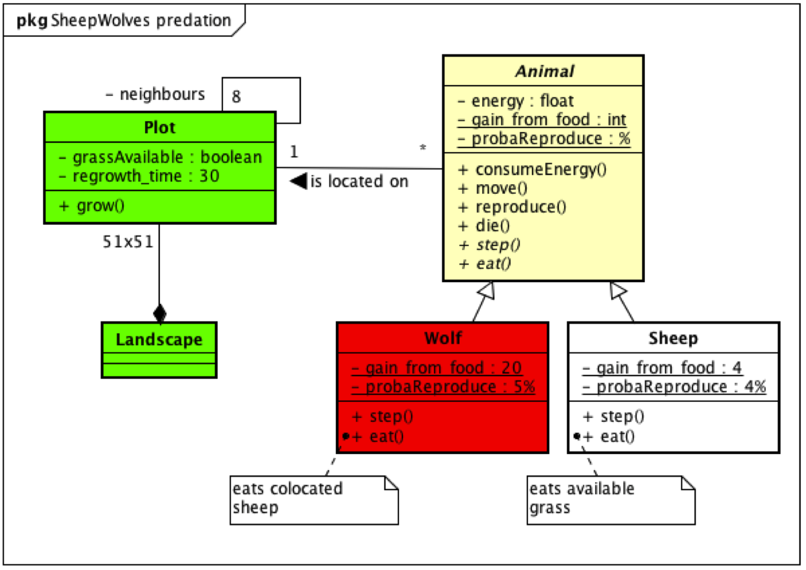 Diagramme de classe du modèle pour la version 2. Version 1"A chaque itération les loups perdent de l'énergie, et ils doivent manger des moutons pour la récupérer.Quand ils n'en ont plus, ils meurent. Chaque loup a une probabilité fixe de reproduction a chaque step". Voici la traduction en diagramme d'activité : 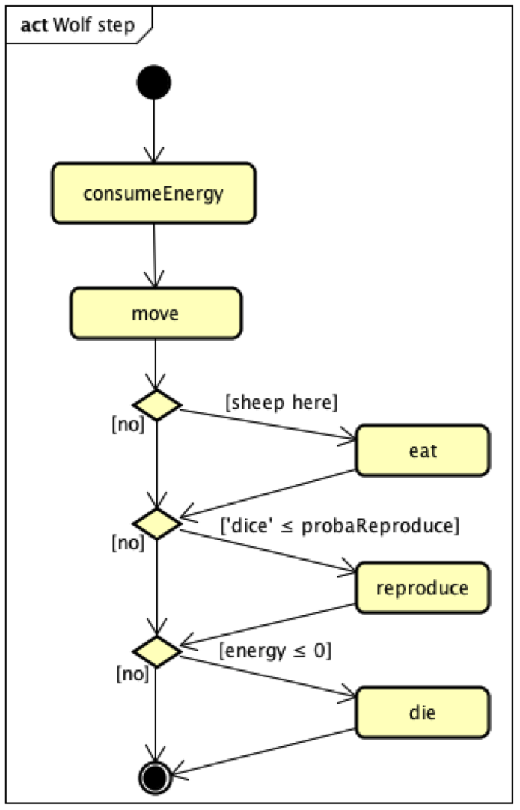 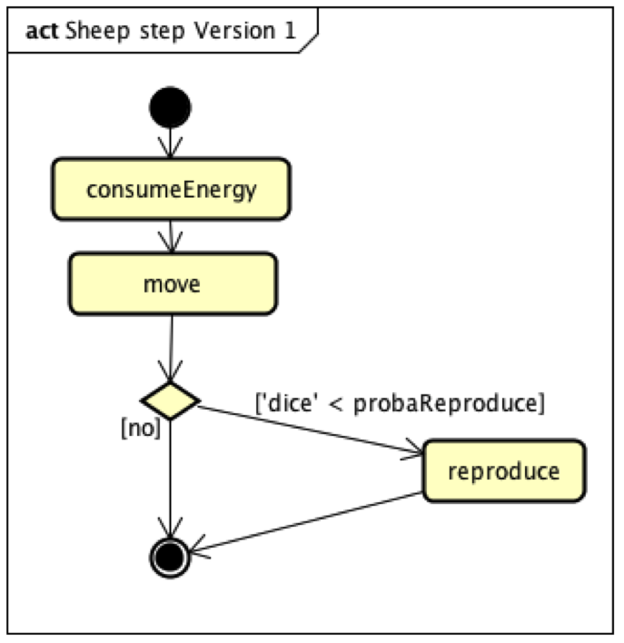 Diagramme d’activité du loup et du mouton (pour la version 1) Diagramme de séquence pour la version 1 : 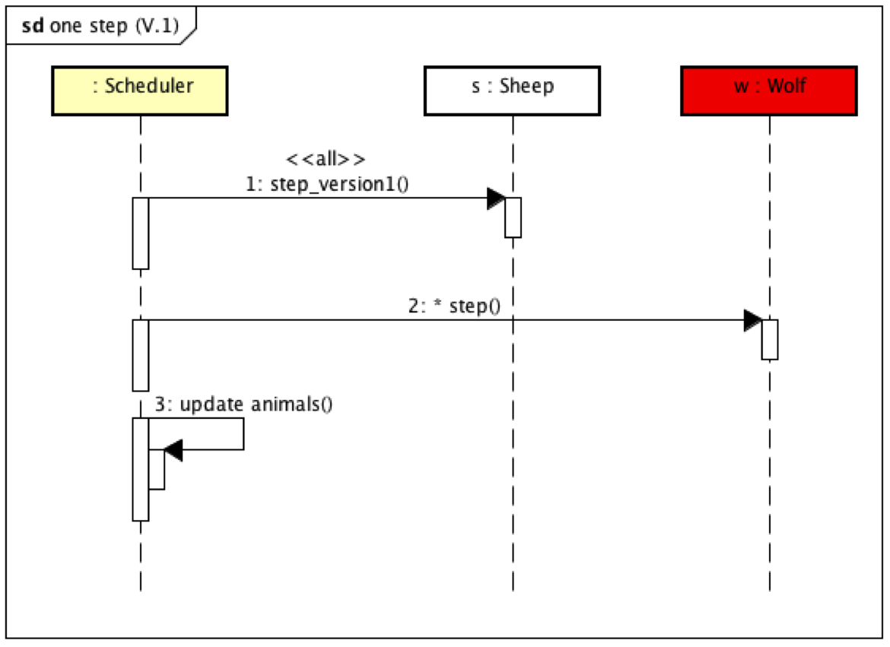 Résultats pour la version 1 :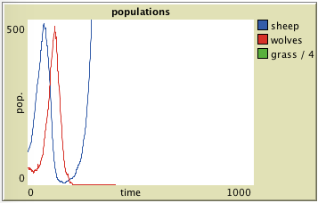 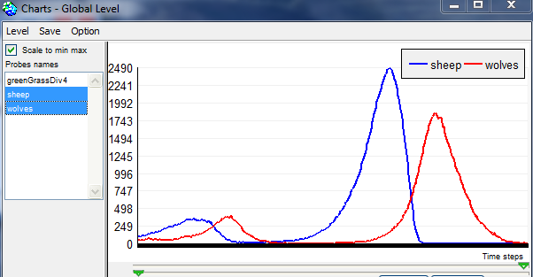 Comme l'explique Wilensky, cette version produit une dynamique instable : soit la disparition des loups et l'explosion démographique des moutons (car pas de limite) : courbes de gauche (dans Netlogo), soit la disparition d'abord des moutons, suivie par celle des loups qui n'ont plus rien a manger : courbes de droite (dans Cormas). Version 2Le diagramme de classe et les activités du loup sont identiques. Les activités du mouton sont maintenant semblables à celles du loup :
Diagramme de séquence pour la version 2 : 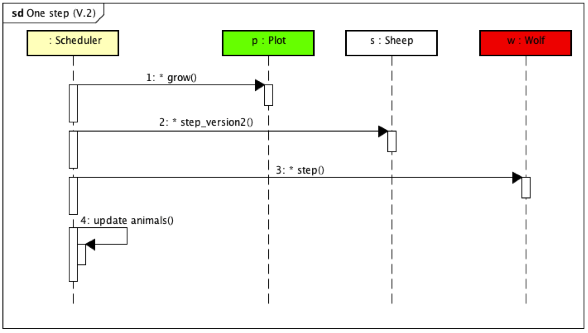 Résultats pour la version 2 : une réplication incorrecte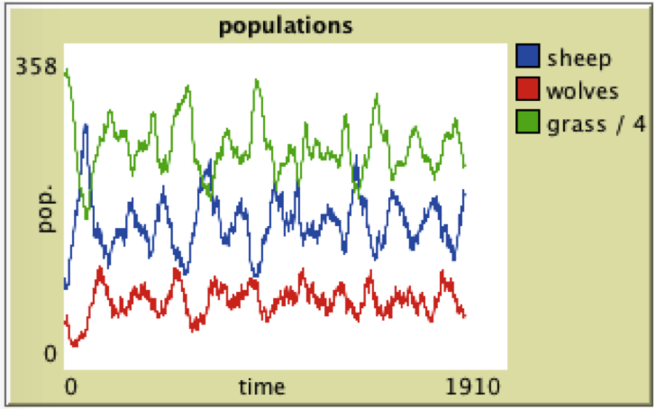 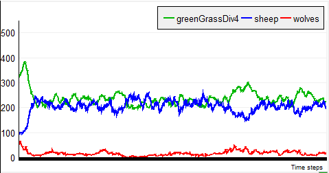 Résultats des deux implémentations : a gauche, version originale sous Netlogo, a droite, réplication sous Cormas. Pour la version 2, on note une stabilisation des dynamiques, qui fluctuent mais ou les deux populations se maintiennent. Par contre, les résultats différent entre les deux plateformes : dans la version originale sous Netlogo (graphe de gauche), on note une moyenne de 150 moutons et de 75 loups. Dans la version sous Cormas (graphe de droite), il y a 200 moutons en moyenne pour moins de 20 loups. Il était donc nécessaire de comprendre d'où venait cette différence importante. Analyse des différentes implémentationsLa description textuelle du modèle et sa traduction en diagrammes de classe ne permettent pas d'obtenir deux implémentations convergentes. Il a donc fallu comprendre d'où venait cette différence. Après analyse du code de Netlogo, nous avons compris que la différence provenait essentiellement du mouvement aléatoire des agents. Dans le cas de Cormas, la méthode prédéfinie dun mouvement aléatoire s'appelle #randomWalk : elle permet a un agent de bouger de sa cellule vers une des 8 cellules voisines prise au hasard. Cela ressemble donc a un mouvement brownien. Dans le cas de l'implémentation de ce modèle sous Netlogo, le mouvement s'écrivait de la façon suivante :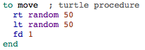 Ici, chaque agent (turtle) se déplace dune cellule, mais en modifiant sa direction de + ou - 50°. Cela entraîne un mouvement plus orienté quun simple mouvement brownien. Cette procédure qui n'était pas décrite dans le texte a des conséquences importantes sur la dynamique globale du systeme. Ce mouvement orienté a été réimplémenté dans la version sous Cormas. Il a fallu rajouté un attribut "direction" aux agents qui, à l'initialisation, contient une valeur aléatoire entre 0° et 360°, ainsi qu'un attribut "maxDeviation" valant 50°. Avec ces modifications, nous obtenons des résultats semblables : 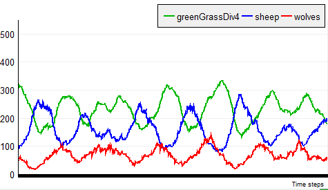 Dans la même idée, nous avons modifié le modèle original sous Netlogo afin d'intégrer le mouvement brownien: 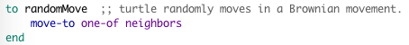 Nous obtenons alors des dynamiques semblables a la 1ere implémentation sous Cormas : 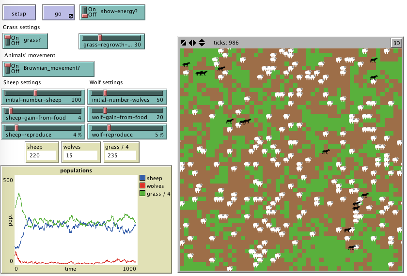 Voici donc la version correcte du diagramme de classe qui prend en compte les déplacements orientés : 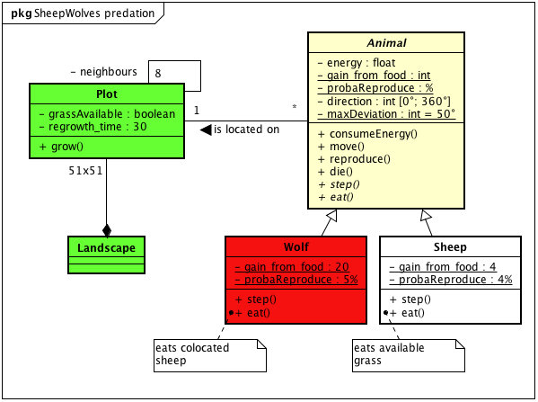
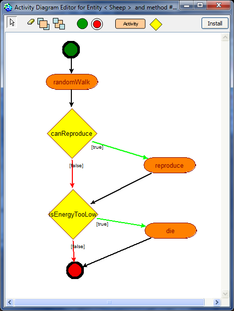 |
|